晴天‧雨天
從帳篷裡醒來，一時讓我搞不清楚自己睡在哪邊，回過神之後才發現昨天花了兩千元住奇怪的旅館。
收好帳篷，洗把臉清醒一下，好好的在床上睡了一覺對恢復精神真是有莫大的幫助。
靠在床邊打開電腦開始整理遊記，哈薩克除了狗很多之外，貓咪也養了不少，早晨陽光從窗邊落下，還沒乾的襪子放在窗台風乾，
不知哪邊來的貓咪從外面跳進窗台，趴在那裡瞇著眼精打瞌睡，拍下這個很有早晨風味的照片當做今天的開始。
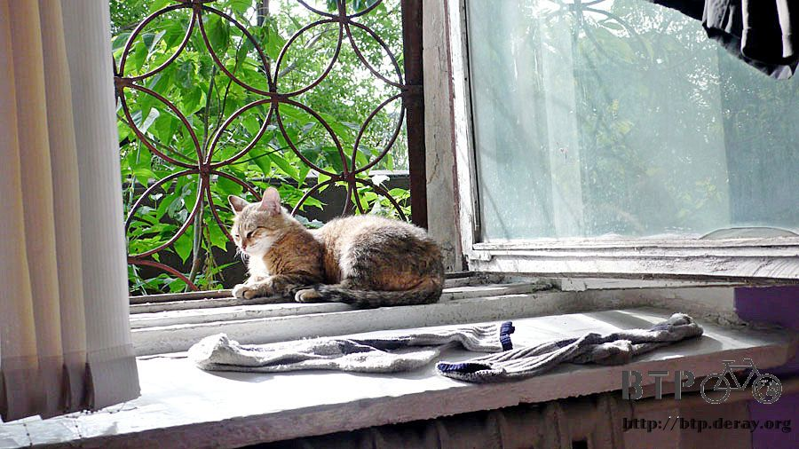
旅館沒有供應早餐，但是有賣一些簡單的飲料、餅乾等等，可是價錢都比外面貴好多。
十點離開旅館，一走出去隔壁就是雜貨店，買了一大瓶的柳丁汁和兩包洋芋片當早餐，隨意的打發掉。
早上天空很陰，真怕會給我下一整天的雨，哈薩克這麼常下雨，怎麼會缺水呢？
才擔心沒多久，小雨就滴滴答答的落下，昨天洗了還沒完全乾的衣服，馬上又要被雨水淋濕了。
冒著小雨騎車，離開這個怎麼看都很傷腦筋的煙囪城市。

雖然天空在下雨，但是我要去的方向是藍天白雲，只要往那邊騎，雨勢應該會逐漸減弱。
距離首都剩下不到兩百公里，路面雖然比較平整，但起伏的地形怎麼也擺脫不掉，今天翻著數不清的小山丘，
好像在體操選手揮舞的彩帶上騎車的感覺一樣，一坡未平一坡又起，只好用時間換取距離，慢慢騎總會前進。
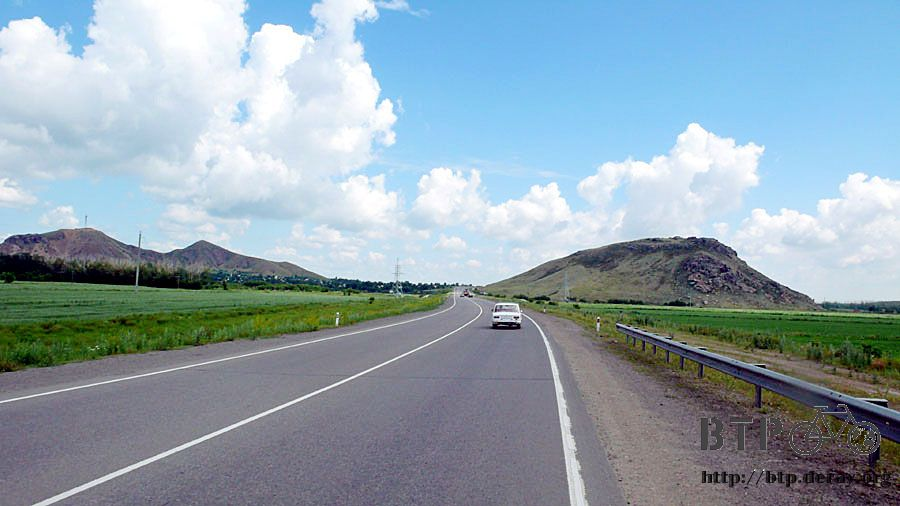
看到哈薩克城市的模樣之後，我還是比較喜歡他鄉村的一面，比較樸素也比較漂亮。
這個小鎮幾乎是建在森林之中，在高高的樹林裡會看到尖尖的屋頂，那就是房子的所在，住在這裡的生活真是我這個都市人無法想像的。
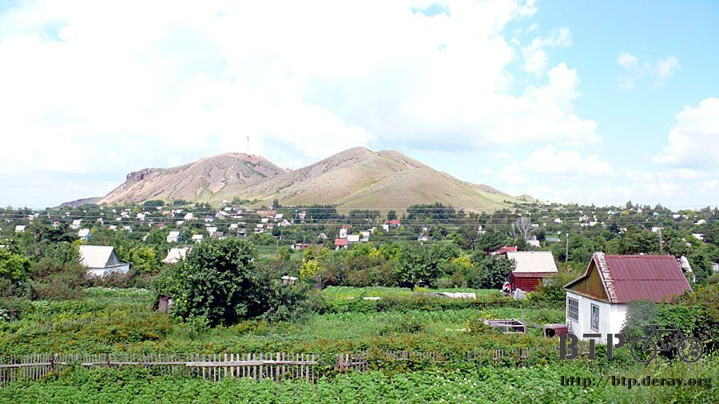
爬完上坡好不容易要滑下坡時，就被設臨檢站的警察給攔下來，還以為只是要跟我打招呼，沒想到又是護照拿出來看。
警察大人還叫了在休旅車裡休息的人來檢查，走出一個看起來像是野戰部隊的人牽了條狗開始聞我的行李，這隻是緝毒犬嗎？
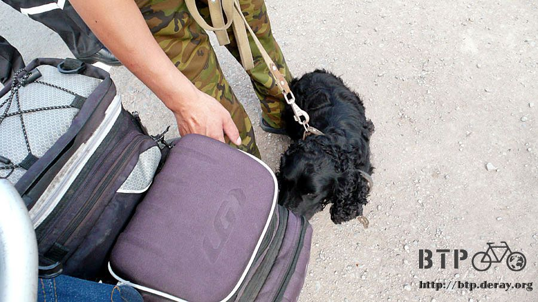
我的行李裡面有幾根香腸不知道牠聞不聞得出來？萬一聞到也不要亂吠，我不想行李被倒出來檢查。
趁大家忙著翻看護照和打量我的時候，拍了一張照片，之後看到這張照片，發現我自己的奇怪模樣，帶著墨鏡、口罩的，怎麼看都是可疑份子。
哪個警察不把我攔下來盤查，那才真是他的失職。
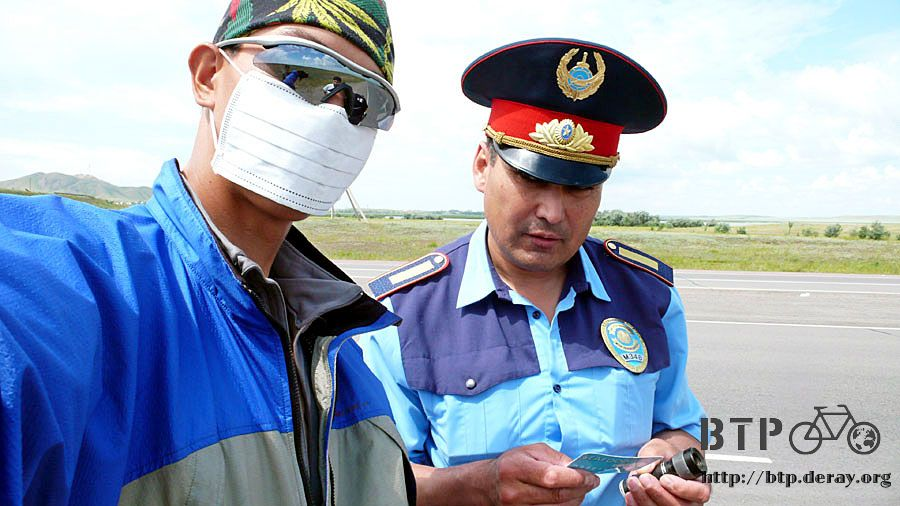
喝著柳丁汁吃著洋芋片總不能當正餐，中午的時候乖乖的去餐廳報到，這間餐廳的招牌很好辨識，圖文並茂。
本來想在這邊好好的吃它一頓，但是服務生似乎不太給面子，之前都行的通的點菜法，在這邊只得到一杯咖啡，
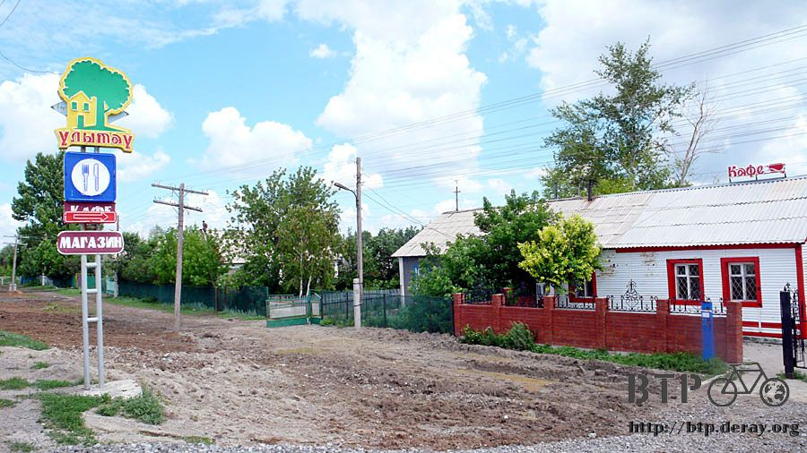
然後就是枯坐著等，連比我慢進來的客人都在吃飯了，我還再等。
等到受不了把服務生叫過來問我的餐點呢？
他的表情好像是：『什麼？你要吃飯？你不是說菜單上的東西你不想吃嗎？』。
拜託>"<我是說菜單上的字我看不懂啦，眼見別人吃著大餐，我等了好久結果就只有一碗高麗菜酸湯配上一坨美乃滋。
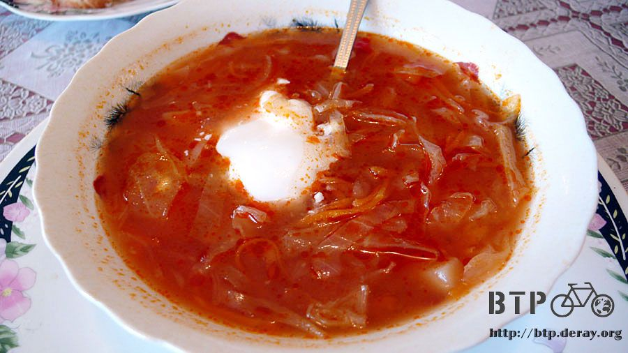
本來想再補點一些什麼，但有點嘔氣所以就算了。
在這邊買了幾個麵包，麵包裡有洋蔥肉餡或是香菇米飯餡，和一瓶汽泡礦泉水帶著路上慢慢吃。
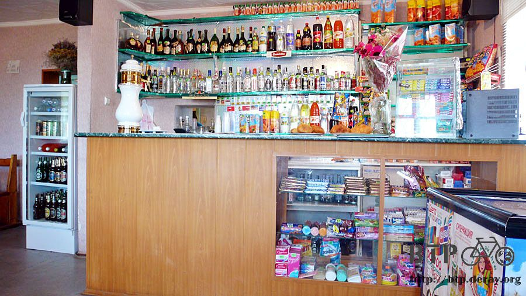
麵包味道還不錯，而且又很便宜，水就有點問題，本來以為只是一般的礦泉水，但是扭開瓶蓋就狂冒氣，比汽水的氣還要多十倍以上。
喝起來的味道有點酸酸苦苦像化學藥劑一樣，也不能一口氣喝很多，還是一般的礦泉水合我胃口。
離開大城市之後，馬路又變窄了，雙向車道的車流量都很大，各自只有一個車道，瘋狂的駕駛很喜歡超車。
小多的地盤只有一條十五公分寬的小路肩讓我騎車，就算我乖乖的騎在這個路肩上，還是時常會被按喇叭。
對向車道迎面超車而來的車輛，和從後方疾駛而過的車輛，都讓我膽戰心驚。
很多時候覺得不太妙，就要往路旁的石子路先閃再說，等被撞到再後悔就來不及了。
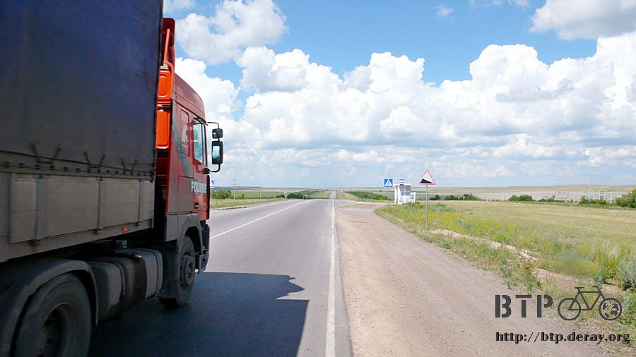
抬頭看著天空，明明就是白雲朵朵外加艷陽高照，但是雨卻下個不停，這是怎麼回事？
就算要下雨也得有個烏雲吧。
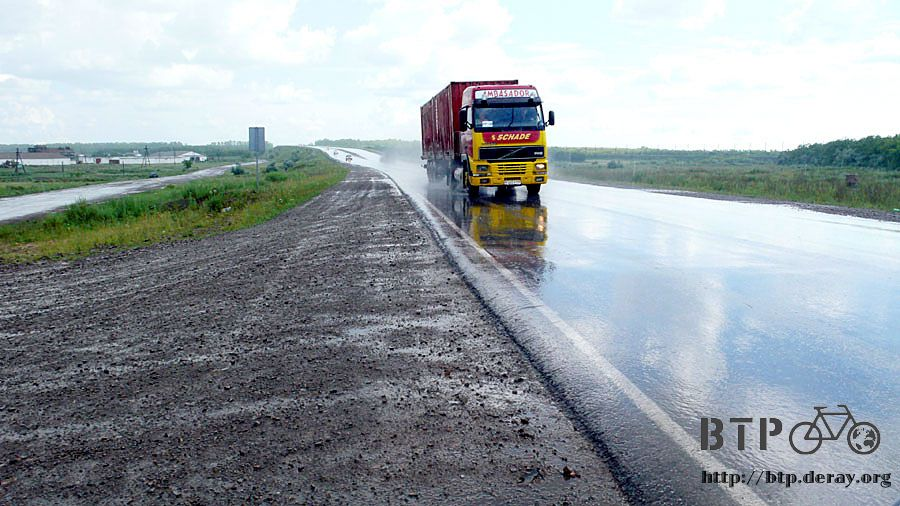
停下車搜尋著烏雲的蹤影，總算看到一個顏色比較深灰的雲塊，其它地方都是晴天，就這裡在下雨，而且還下那麼大。
眼睛看到的天氣跟實際體會到的天氣居然不一樣，如果這個世界是程式寫出來的，那哈薩克的天氣充滿了很多Bug。
雖然怪怪的天氣給我下雨，但沒兩下子就停了，身上好不容易才風乾的衣服，又被淋濕，然後又要再被風乾一次，搞不好根本就沒有洗衣服的必要。
下過雨後，天空中浮現半座彩虹橋。
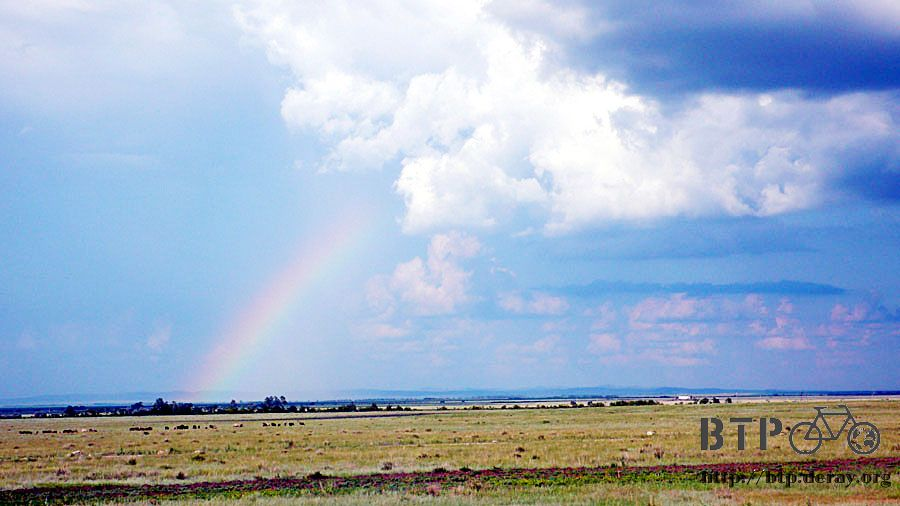
今天看到哈薩克最具規模的耕田，整個山頭全部都開墾成農地，一眼望去全～部都是綠油油的一片。
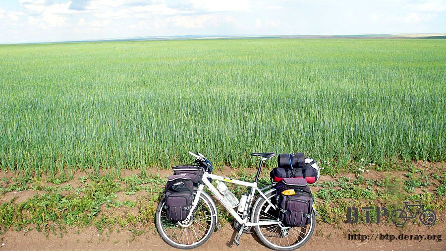
如果哈薩克人卯起來種田的話，我這一路上看到的荒原，總有一天可以全部開墾成農地。
靠近一點看這些作物，種的都是同樣的東西，依照哈薩克人的飲食習慣，這個應該是做麵包用的小麥，可是又有點不太像。
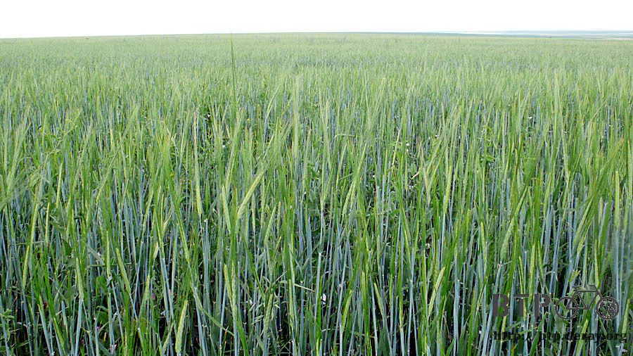
沿著田間小徑騎到田裡，哼著一首名曲『country road』，曲調是『宮崎駿－心之谷』的版本。
鄉村小路～帶我回家～啦啦啦
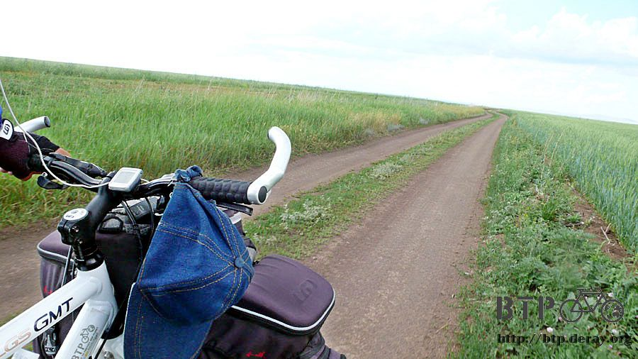
雖然很有氣氛，但是田裡蚊子太多，既兇狠又大隻，即使身穿盔甲牠也有本事叮下去，何況只穿著長袖的我，浪漫完之後就快閃吧。
本來是今天目的地的小鎮，下午六點左右抵達，有一個畫像常常會看到，就是照片右邊那個白鬍子的老人。
不知道他是廣告的招牌還是某個哈薩克的名人。
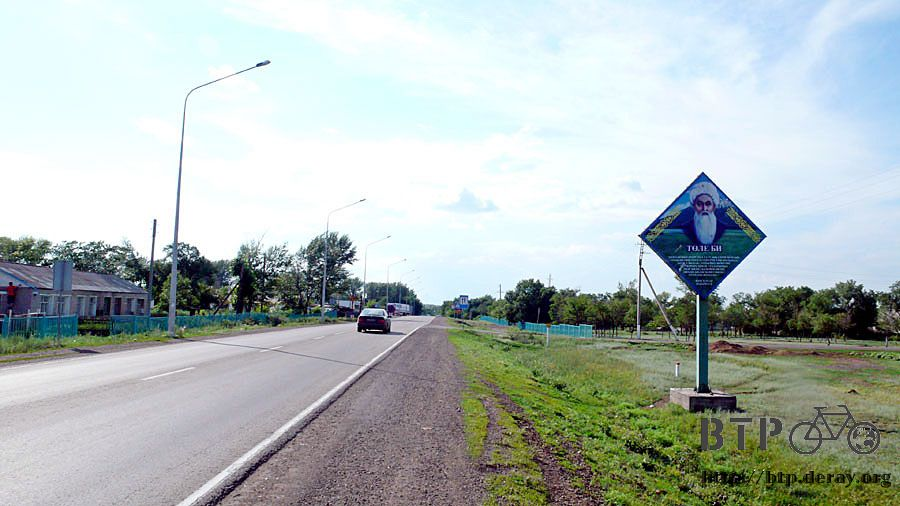
在進入城鎮之前就已經看到這裡邊有旅館的招牌，進來後沒多久果然找到一間看起來很大的駱駝旅館。
看來晚上就是要睡在這裡了，進去問了價錢，最便宜的房間是一千五百元，剛好是一天的生活費，有點心疼。
準備要付錢的時後順便問了一下這邊該不會有網路可以用吧？
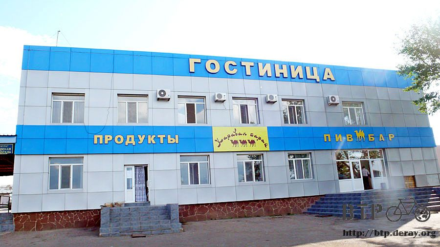
結果當然是沒有，但是回答問題的店員則很有把握的說往下繼續走的話，就會找到有網路的地方。
這是第一次問人家哪邊有網路，別人不是聳聳肩膀跟我說不知道，而是明確的回答。
拉起腰包的拉鍊，說聲很抱歉，那我要趕一下路，今天不住在這裡了，要是知道前方不遠就有網路，而我卻睡在這邊的話，晚上一定會失眠。
聽旅館人員的說法接著往下騎，這個鎮不大，真的會有網路的存在嗎？
沿路緊盯每一個招牌看板，可疑的建築就過去問一下，結果只是附設有公共電話的雜貨店罷了，哈薩克連電話都很少見，大家都拿手機。
沿路問雜貨店哪邊有網路可以用，探聽情報順便買零嘴吃，問了幾間都是沒有，或是不知道。
眼看就要離開鎮上了，到底網路在哪呀~_~該不會旅館員工的往下走，又是要走到首都吧。
離開鎮上之前的最後一間雜貨店，打算如果又問沒有的話，那就買一瓶汽水，然後看是要重新回旅館住，還是接著往下騎。
老闆娘看著我的裝扮，指著手套問『你是騎自行車的嗎？』

點點頭並指著外面，只需要四個字彙，簡單的哈薩克語足以讓我做自我介紹。
『單車‧旅行者‧台灣‧一個人』
然後看其它人接著問什麼問題，聽得懂就回答，聽不懂就傻笑帶過。
問題千變萬化，叫什麼名字？幾歲？結婚了沒？信什麼教？
老闆娘拿出我要的可樂：『不用錢，這個請你喝，台灣來的真厲害，居然騎腳踏車到這裡。』
老闆娘到店門口看小多長什麼樣子，並把她的兩個兒子都叫過來，兒子正在修車，脫下手套和我握手，連車子壞掉待修的客人都靠過來。
本來只是想買個飲料，一時之間就變得如此熱鬧。
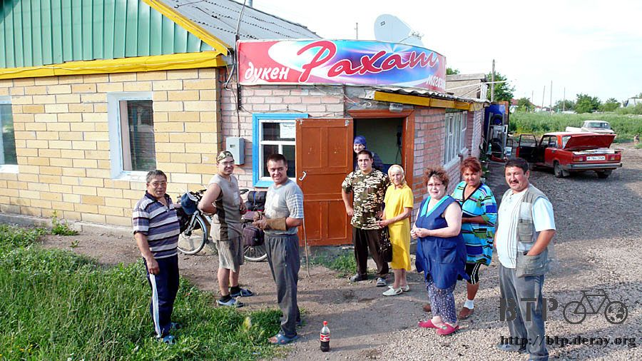
哈薩克人笑起來很好看，不做作，很親切。
每天在路上騎車，聽著台灣的流行音樂、看著大自然的景色，沒什麼和人接觸的機會，語言使用的機會也不高。
在這樣的情況下，要說現在是在哪一國都可以。
只有當停下腳步，去接觸當地人的時候，才會有身在哈薩克的感覺。
若是問我在哈薩克騎車是什麼感覺？
其實就是那個樣子，流汗、喘氣、上坡、烈日。
但若問我在哈薩克旅行是什麼感覺？
則是完全不同的回答，友善、熱情、好客、親切。
拎著免費的可樂喝了幾口，告別大家該繼續上路了，所有人也回到各自的崗位，開店、修車和等車修好。
本來連旅館都找好了，價錢也問好了，因為聽到網路的情報，讓我興奮得奪門而出，結果啥米也沒找到。
但是心情很好，所以決定不回頭，接著往下騎，天黑前能落腳就好了，反正不論怎麼樣，明天肯定都能到首都。
雖然沒有告示牌的指引，但是十多公里之後，草原中出現了一棟房子，外頭還擺著旅館的招牌。
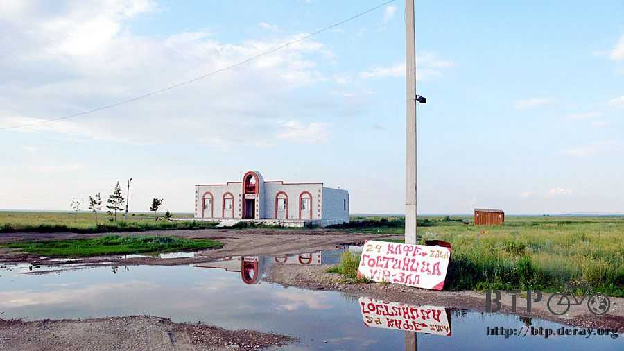
完全是獨棟經營，除了這棟房子之外，方圓眼見所及沒有任何建築物，有點懷疑還有沒有在營業。
一靠過去就有小狗跑出來吠，心裡就放心了，既然有養狗，那表示這邊還有人在，不是空屋。
才準備要進屋裡，正好有人打開門出來，他是一個年輕人，旅館和餐廳是一家人合力經營，媽媽、妹妹和他。
詢問過住宿的價錢之後非常開心，他在筆記本寫下五百元。
這個價錢就是我所追尋的旅館等級呀～
牽著小多進房間，發現有一張好大的餐桌，幾張沙發，高級的黑色漆木傢俱，但是沒看到床，原來那一張長的沙發就是睡覺的地方。
五百元的旅館實在太酷了，這一間與其說是房間，不如說是VIP的宴客廳比較適合。
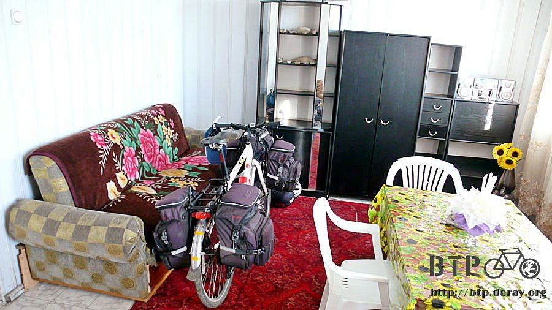
今天順利找到一個有屋頂的地方落腳，卸下小多的包包，自己拿著毛巾準備去盥洗。
外頭一共養了三隻小狗，膽子很小，喜歡對著我吠，但是又一邊吠一邊後退，房子的後面有一個藍色的圓筒。
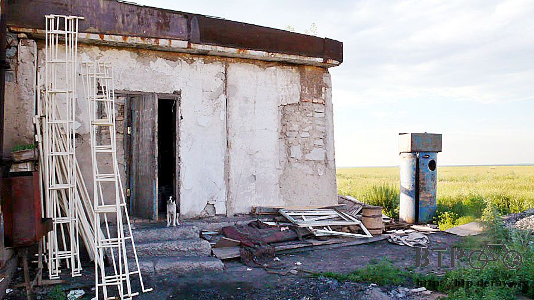
果然跟我猜想的一樣，這是浴室呢～在上頭的水箱儲水，然後裡面有開關，轉開就可以淋浴。
看來這邊雖然有電，但是沒有自來水，既然水不方便，那就不要給人家添麻煩，回去洗手檯擦個澡就好了。
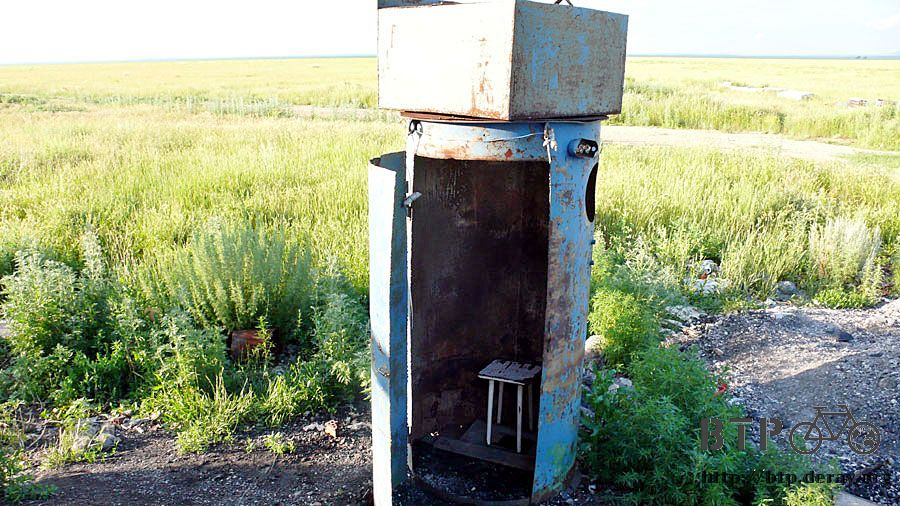
一進到餐廳耳邊響起周董的止戰之觴，糟糕，聽了一整天的音樂，居然產生幻聽了，拍一拍腦袋，音樂還是存在。
老闆從吧檯探出頭來，原來這個音樂是他特地放的，知道我是台灣來的之後，他很厲害的找到中文歌曲放給我聽。
聽著熟悉的旋律，希望老闆不要問我這是在唱什麼，我要怎麼解釋周董的歌若是不看歌詞，根本沒有人聽得懂內容。
因為房間裡面就有一張大餐桌，所以吃飯的時候就直接在房間裡面吃，妹妹將餐點送進來，感覺自己真的變成VIP了。
晚餐吃得很豐盛，一大碗牛肉蔬菜麵，麵是很粗的那種圓麵條，口感十足，還配上幾個特大蒸餃。
麵包、奶茶是不可缺少的，吃飽之後我都會接著續杯喝奶茶，享受悠閒時光。
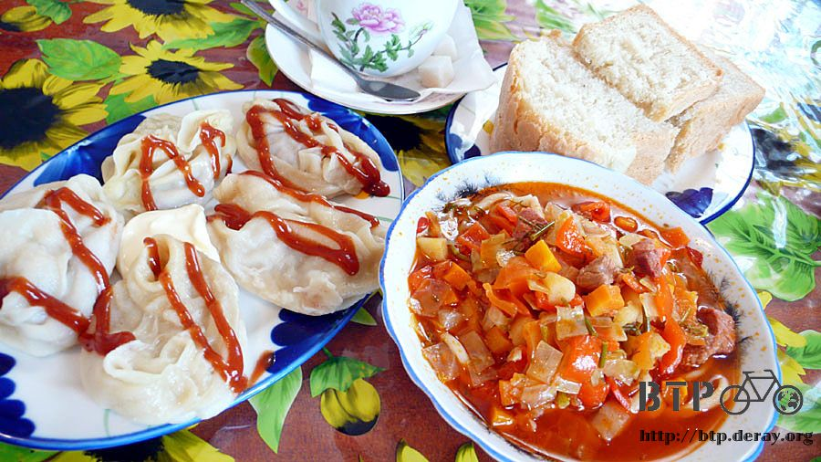
明天就可以騎進首都，要是再找不到網路的話，將來我就到哈薩克來開一間網咖，做獨家生意。
繼續閱讀：7.10 終於找到你了
哈薩克-堅戈－ 1：0.26 台幣
7.9 |
總計：1770元 |
果汁250元、洋芋片80元、午餐咖啡、酸湯180元、汽泡礦泉水100元、包餡麵包四個160元、冰淇淋50元、旅館500元、晚餐牛肉蔬菜麵、蒸餃、奶茶、麵包450元 |
|